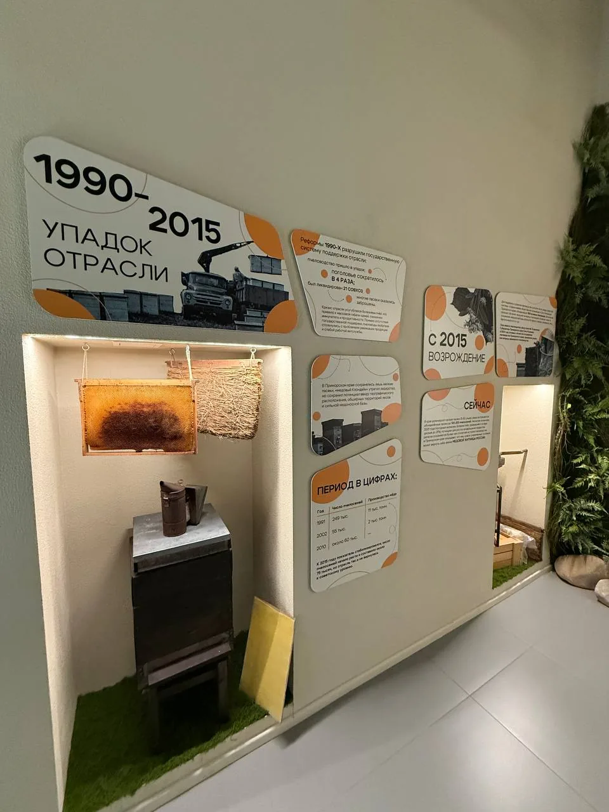
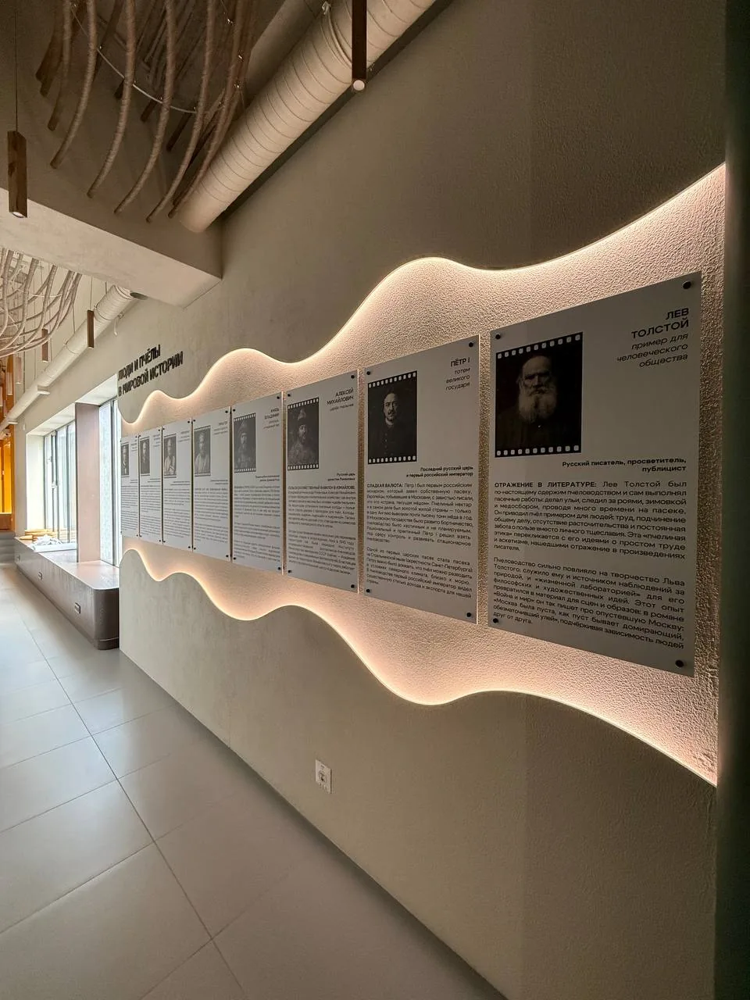
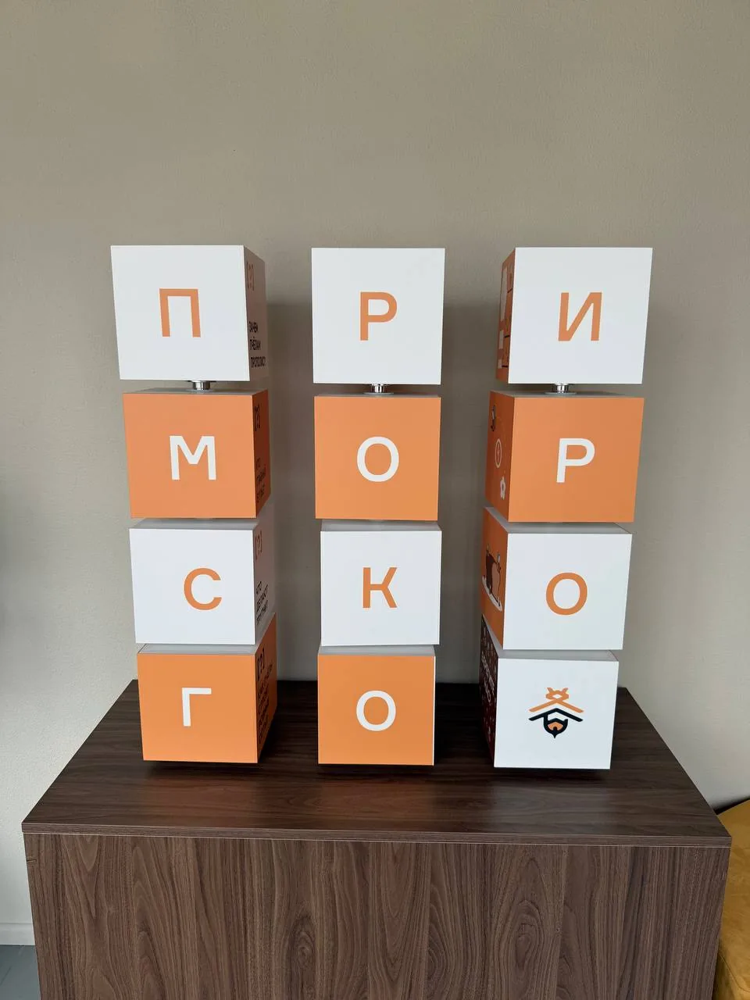
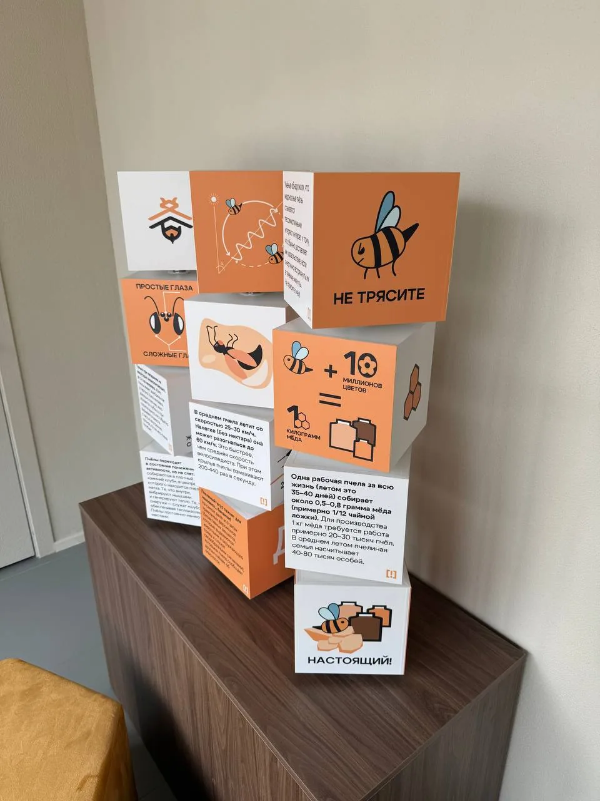
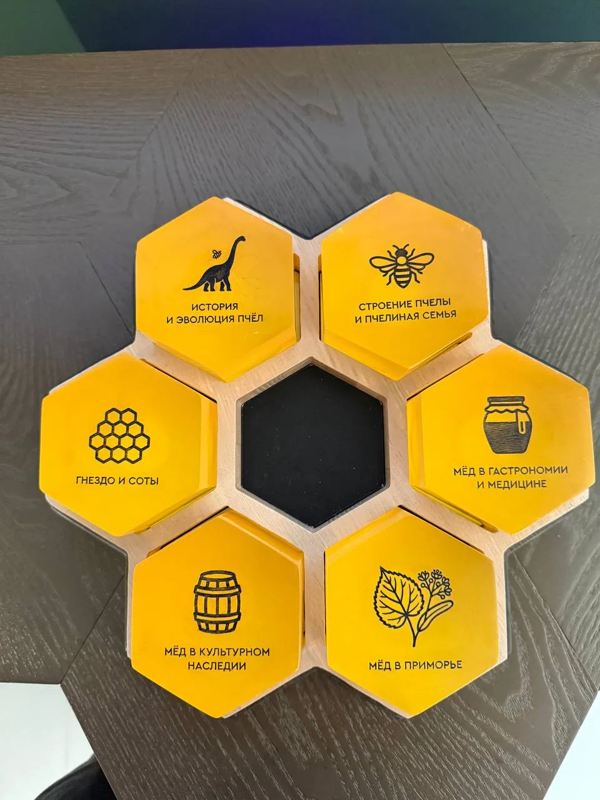
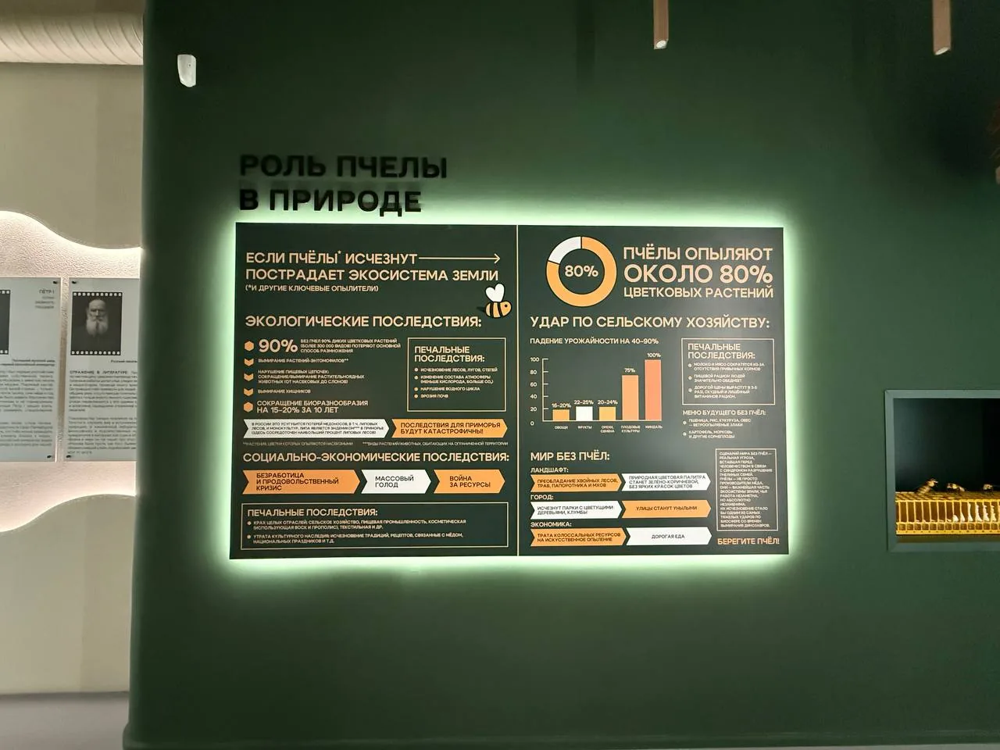

Дом мёда
Комплексное оформление визуального пространства павильона рекламными и информационными элементами и конструкциями.

История в пространстве
Исторические панели объединяют даты, фотографии и предметы в один рассказ. Свет в нишах выделяет экспонаты, а округлая графика связывает информационные блоки. Каждый элемент можно рассмотреть отдельно, сохраняя общую хронологию.


Можно рассмотреть со всех сторон
Тема Приморья продолжается в объёмных кубах: на гранях размещены буквы, иллюстрации и факты. Небольшой объект дополняет настенную экспозицию и меняет привычный способ знакомства с информацией.


Геометрия самой природы
Шестиугольники напоминают пчелиные соты. Яркий предметный модуль и световая панель о роли пчелы дополняют историческую часть: от прошлого промысла — к знакомству с природой.


Есть похожая задача?
Расскажите о вашем проекте — обсудим оформление, детали и реализацию.